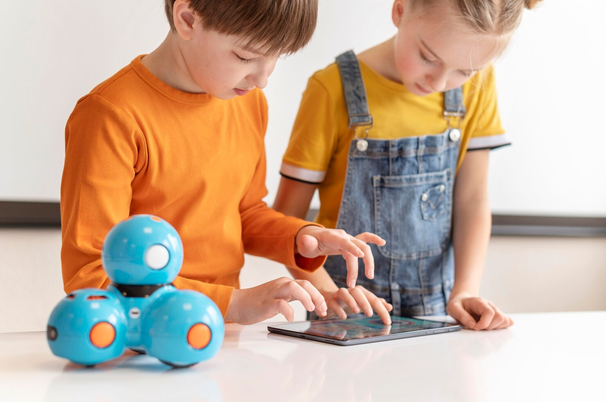
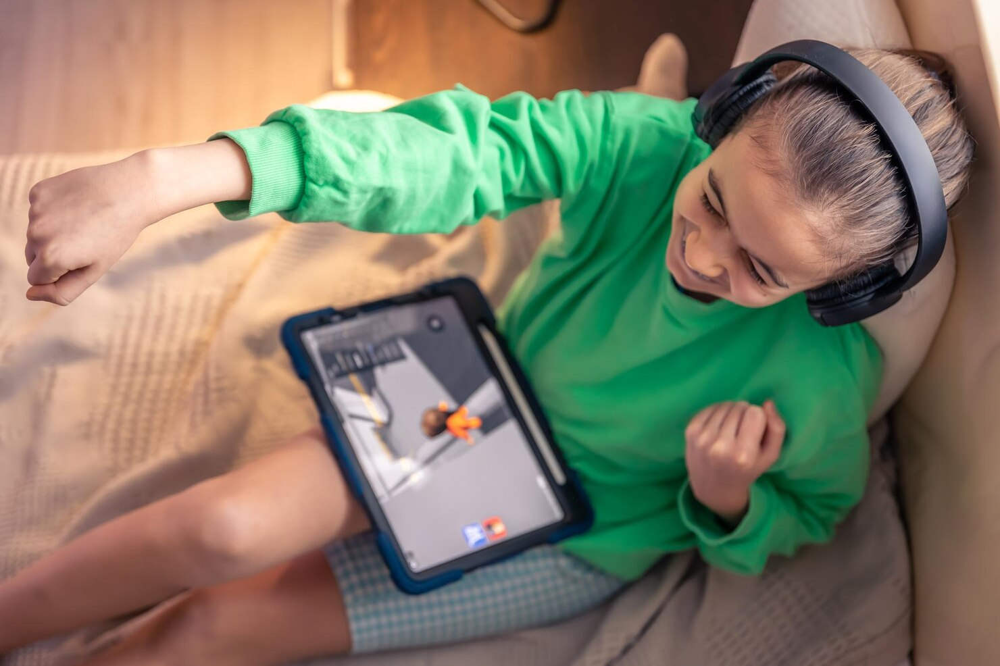

Cómo Funciona
MóvilPlayLab ofrece una experiencia interactiva que combina simulaciones digitales con actividades offline, preparando a tu hijo para un uso responsable de la tecnología.

Simulación Guiada
Escenarios controlados donde el niño aprende a manejar situaciones digitales antes de usar un móvil real.

Misiones Offline
Actividades y juegos fuera de la pantalla que refuerzan la comprensión y el comportamiento responsable.

Progreso y Métricas
Los padres reciben reportes claros de los avances de sus hijos y sugerencias para acompañarlos en cada etapa.